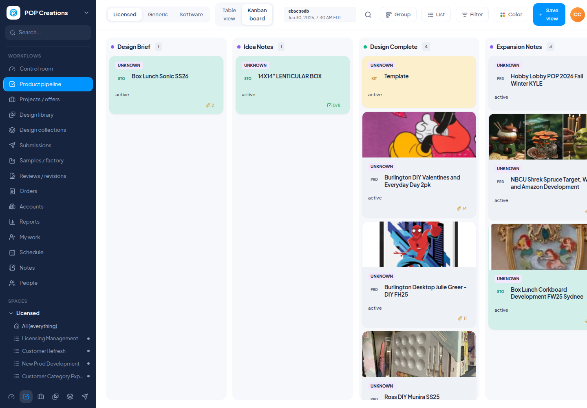
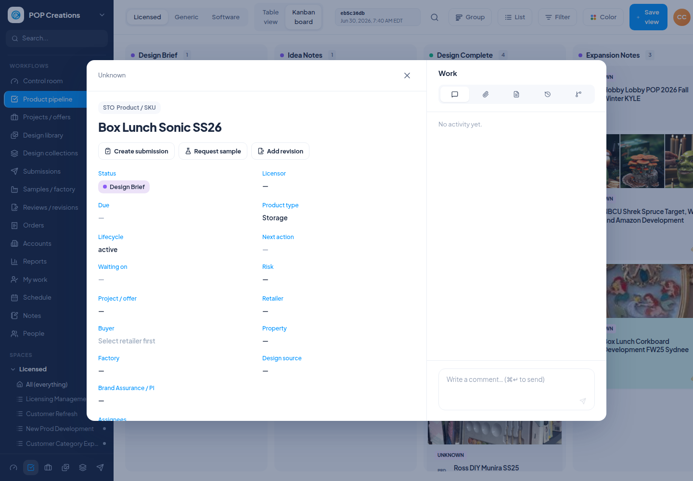

Prepared June 30, 2026. Goal: help the project manager decide which ClickUp elements POP Creations actually uses and which should be added or improved in Poppim before retiring ClickUp.


Use the panel references to find each numbered marker. Mark whether the team actually uses the ClickUp element and whether Poppim needs it before migration.
| # | Element | ClickUp evidence from MCP | Current Poppim status / PM decision | Panels | Used? |
|---|---|---|---|---|---|
| 1 | Board columns / statuses | Licensing 24 statuses, Sampling 17, New Prod 37, Edge Generic 19. | Present, but legacy/empty stages should be cleaned up. | 1,7 | ☐ Yes ☐ No |
| 2 | Card order inside a column | Status order verified; exact drag order not exposed by MCP. | Partial from ClickUp order index; PM should decide if exact order matters. | 1,7 | ☐ Yes ☐ No |
| 3 | Spaces / Folders / Lists | POP Creations, Spruce Line, designflow, plus product folders/lists verified. | Mapped to departments and saved list views. | 1,7 | ☐ Yes ☐ No |
| 4 | Saved views | List URLs verified; named saved views not enumerable through MCP. | Present as saved views; names/order need PM review. | 1,7 | ☐ Yes ☐ No |
| 5 | Card cover images | Image attachments/thumbnails found; no distinct cover field exposed. | Present when image data exists. | 2,7 | ☐ Yes ☐ No |
| 6 | Assignees | Assignees verified on sampled tasks. | Present on cards and detail modal. | 2,7 | ☐ Yes ☐ No |
| 7 | Due dates | Due dates verified on sampled tasks. | Present, with Poppim date logic. | 2,7 | ☐ Yes ☐ No |
| 8 | Priority flag | Low, normal, high, and null priorities found. | Partial; not a major workflow yet. | 2,7 | ☐ Yes ☐ No |
| 9 | Tags | Tags such as disney, nbcu, click team only, template found. | Imported/shown; board filters need review. | 2,7 | ☐ Yes ☐ No |
| 10 | Checklist counts on cards | Checklist unresolved/resolved counts found. | Present as counts. | 2,7 | ☐ Yes ☐ No |
| 11 | Checklists | PPS Approval, Sampling request, Licensor Approval, Tech Packs, Buyer picks. | Present; PM should decide required gates. | 4,9 | ☐ Yes ☐ No |
| 12 | Subtasks | Subtasks found on sampled cards. | Simplified; assignee/date behavior may need work. | 4,9 | ☐ Yes ☐ No |
| 13 | Task description | Long markdown descriptions found on richer cards. | Present when imported, but not highly structured. | 4,8 | ☐ Yes ☐ No |
| 14 | Comments | Comments present on richer sampled cards. | Present, but review mentions/threading needs. | 5,9 | ☐ Yes ☐ No |
| 15 | Threaded comment replies | Threaded replies retrieved for real ClickUp comment ids. | Not fully present. | 5,9 | ☐ Yes ☐ No |
| 16 | Mentions / notifications | @mentions found in comment bodies. | External notification behavior not present. | 5,9 | ☐ Yes ☐ No |
| 17 | Attachments / files | PDF/image attachment URLs and metadata found. | Files/images present; upload/version workflow needs review. | 5,9 | ☐ Yes ☐ No |
| 18 | File previews | Image thumbnail URLs found; PDFs expose attachment URLs. | Images preview better than PDFs/other file types. | 5,9 | ☐ Yes ☐ No |
| 19 | Custom fields | Customer/Retailer, Buyer, Factory, Category, Due Date Licensor, SMPL Req, license, put-up. | Imported side pane; many not first-class editable fields. | 3,8 | ☐ Yes ☐ No |
| 20 | Status history / activity log | Created/updated/current status available; full activity history not exposed. | Limited and not prominent. | 5,9 | ☐ Yes ☐ No |
| 21 | Time in status | MCP bulk call returned no task data. | Not visible yet. | 6,10 | ☐ Yes ☐ No |
| 22 | Time tracking entries | Time estimate found; sampled time entries returned zero entries. | Sparse import; not primary workflow. | 6,10 | ☐ Yes ☐ No |
| 23 | Task relationships / linked tasks | Linked tasks found on sampled cards. | Imported links exist; management UX needs polish. | 6,10 | ☐ Yes ☐ No |
| 24 | Dependencies / blocking | Dependency arrays exist but sampled tasks were empty. | Poppim Operations has blockers/dependencies, not ClickUp-style UX. | 6,10 | ☐ Yes ☐ No |
| 25 | Approvals / decisions | Approvals appear as statuses/checklists/comments, not separate objects. | Decision records exist; final approval workflow needs PM review. | 4,10 | ☐ Yes ☐ No |
| 26 | Stage move rules | Status order verified; automations/rules not exposed by MCP. | Stage moves currently need clearer business gates if desired. | 4,10 | ☐ Yes ☐ No |
| 27 | Product/customer/buyer context | Task names, descriptions, Customer/Retailer and Buyer fields verified. | Present; buyer feedback/history could be richer. | 3,8 | ☐ Yes ☐ No |
| 28 | Licensor/property/product type | Disney, NBCU, Star Wars, Marvel, Peanuts, license and task type evidence. | Present. | 3,8 | ☐ Yes ☐ No |
| 29 | Factory/sample information | Factory, SMPL Req, sampling statuses, checklist gates, and sample comments found. | Partial; sourcing/sample workflow needs PM review. | 3,8 | ☐ Yes ☐ No |
| 30 | Reporting / dashboards | Dashboard search returned 0; reporting config not exposed by MCP. | Reports and Control Room exist, but role-specific dashboards need review. | 1,10 | ☐ Yes ☐ No |